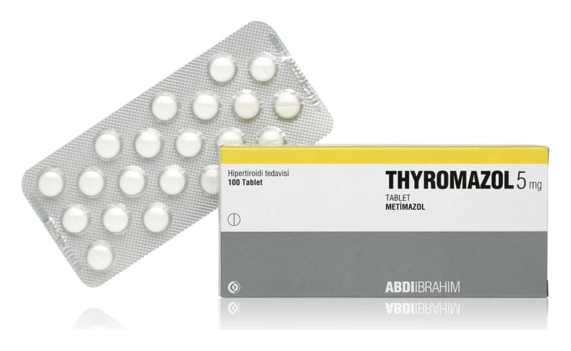

Thyromazol 5 mg Tablet, 50 Adet

Ne için kullanılır
KT · Bölüm 12. THYROMAZOL’ü kullanmadan önce dikkat edilmesi gerekenler 3. THYROMAZOL nasıl kullanılır? 4. Olası yan etkiler nelerdir? 5. THYROMAZOL’ün saklanması
Başlıkları yer almaktadır.
1.THYROMAZOL nedir ve ne için kullanılır?
THYROMAZOL, beyaz renkli, yuvarlak, bir yüzü ortadan çentikli, 30, 50 veya 100 tabletlik blister ambalajlarda sunulur.
THYROMAZOL antitiroidler olarak bilinen ilaç grubuna dahildir. Sebebi ne olursa olsun tiroid bezindeki tiroid hormonlarının aşırı üretilmesini kontrol eder. THYROMAZOL, tiroid hormonlarının aşırı üretilmesini tedavi etmek için aşağıdaki durumlarda kullanılır: • Tiroid bezinizin aşırı üretimini tedavi etmek için ilaç kullanmanız gerekiyorsa, özellikle küçük bir guatrınız (boğazın önünde şişme) varsa veya guatrınız yoksa, • Tiroid bezinizden ameliyat olacaksanız, • Radyoaktif iyot kullanılan bir tedavi alacaksanız, özellikle tiroid hormonu aşırı üretimi ciddi boyutlarda ise, • Radyoaktif iyot tedavisi sonrası, radyoaktif iyot tedavisinin etkisi tam anlamıyla başlayana kadar.
THYROMAZOL aynı zamanda iyodür içeren kontrast madde kullanılan tetkiklerde olduğu gibi iyodür alımına maruz kalmadan önce, tiroid hormonlarının aşırı üretimini önlemek için kullanılır:
• Başka bulgular olmadan tiroid hormonu aşırı üretiminiz varsa, • Tiroid bezinizde hormon üreten belirli bölgeler varsa (otonom adenom), • Hayatınızda daha önce aşırı miktarda tiroid hormonu üretimi olduysa.